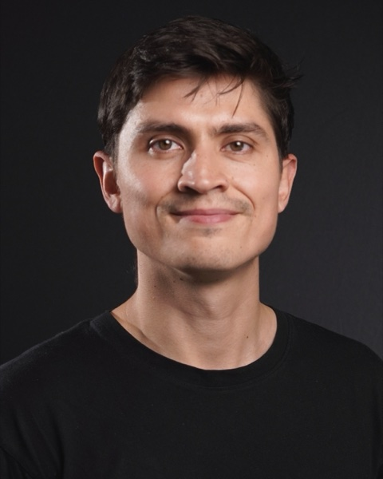

Postdoctoral Researcher in Machine Learning
GeoAI Research Group
GIS&T team
Ghent University
I am a postdoctoral researcher in the GeoAI Research Group, part of the GIS&T team at Ghent University, where I work with Nico Van de Weghe on the STREAMS project (Safe Traffic and Road Evaluation, Analysis and Monitoring System). The project aims to improve traffic safety around road works, in particular for vulnerable road users such as cyclists and pedestrians. I develop machine learning methods for the spatio-temporal data collected by its roadside sensors.
From 2024 to 2026 I was a postdoctoral researcher in the AIDA group at Ghent University, working with Tijl De Bie and Jefrey Lijffijt. My research there was on machine learning for temporal and graph-structured data: representation learning for temporal networks, point processes and event data, link prediction and its evaluation, and multiresolution analysis of dynamic networks.
I have applied these methods to several domains in collaboration with domain experts, including the movement of birds (with Lucy Mitchell, Luc Lens and Frederic Verbruggen at Ghent University), event prediction in soccer (with Jesse Davis and Maaike Van Roy at KU Leuven), career trajectories on the job market, music playlists, and the political positions expressed by large language models.
I completed my PhD at Ghent University in 2024, with the thesis "Modeling weighted and temporal graphs: methods and evaluation", supervised by Jefrey Lijffijt and Tijl De Bie. In the summer of 2024 I visited Imperial College London to work with Nick Heard and Alexander Modell, as part of the NeST programme (Network Stochastic Processes and Time Series).
Before my PhD, I completed a Master of Engineering at Télécom Paris and the Master of Science MVA (Mathematics, Computer Vision, Machine Learning) at ENS Paris-Saclay. I then worked for one year as a data scientist at Shift Technology in Paris.
Large language models reflect the ideology of their creators
Multiresolution analysis and statistical thresholding on dynamic networks
SimHawNet: a modified Hawkes process for temporal network simulation
Temporal graph autoencoder: mapping dynamic graphs to dynamical systems with neural ODEs
Next-event prediction in soccer: assessing the impact of team and player information
Exploring the performance of continuous-time dynamic link prediction algorithms
Modeling weighted and temporal graphs: methods and evaluation